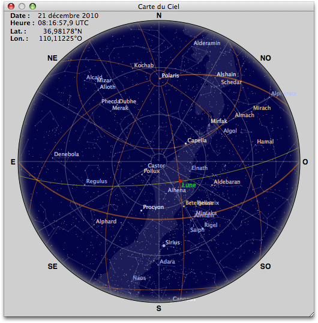
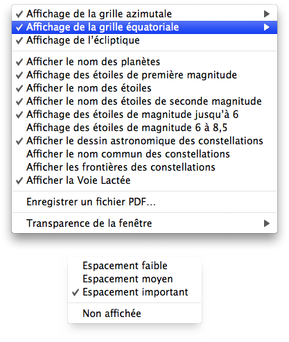

Fenêtre Carte du ciel
La fenêtre affiche le ciel de l’éclipse avec les planètes et les étoiles de première magnitude depuis votre lieu d’observation. Les étoiles jusqu’à la magnitude de 2,5 peuvent être affichées, avec optionnellement leurs noms. La Voie Lactée et le dessin astronomique des constellations peuvent aussi être ajoutés, ainsi que les étoiles jusqu’à la magnitude 8,5.
-
Dans le menu Affichage sélectionnez Carte du ciel…


Un menu contextuel est disponible à l’aide d’un clic droit; celui-ci vous permet de sélectionner quelques options:
- Affichage de la grille azimutale - Affiche ou masque la grille azimutale en blanc avec un pas sélectionnable. Masquée par défaut.
- Affichage de la grille équatoriale - Affiche ou masque la grille équatoriale en marron avec un pas sélectionnable réglé par défaut sur Fin (chaque heure). Actif par défaut.
- Affichage de l’écliptique - Affiche ou masque l’écliptique en jaune. Masqué par défaut.
- Afficher le nom des planètes - Affiche ou masque le nom des planètes en jaune. Affiché par défaut.
- Affichage des étoiles de première magnitude - Affiche ou masque les étoiles de première magnitude en utilisant leur couleur spectrale. Affichée par défaut.
- Afficher le nom des étoiles - Affiche ou masque le nom des étoiles de première magnitude en utilisant leur couleur spectrale. Actif par défaut.
- Afficher le nom des étoiles de seconde magnitude - Affiche ou masque le nom des étoiles de seconde magnitude en utilisant leur couleur spectrale. Masqué par défaut.
- Affichage des étoiles de magnitude jusqu’à 6 - Affiche ou masque les 4.500 étoiles jusqu’à la magnitude 6 (limite visuelle) en utilisant leur couleur spectrale. Actif par défaut.
- Affichage des étoiles de magnitude 6 à 8,5 - Affiche ou masque les 62.000 étoiles de magnitude 6 à 8,5, seulement pour les éclipses totales de Lune. Un ralentissement de l’affichage est à prévoir. Masqué par défaut.
- Afficher le dessin astronomique des constellations - Affiche ou masque le dessin astronomique des constellations en utilisant de fines lignes blanches et transparentes. Actif par défaut.
- Afficher le nom commun des constellations - Affiche ou masque le nom des constellations en mauve. Masqué par défaut.
- Afficher les frontières des constellations - Affiche ou masque les frontières des constellations en mauve. Masqué par défaut.
- Afficher la Voie Lactée - Affiche ou masque la Voie Lactée, seulement pour les éclipses totales de Lune. Actif par défaut.
- Enregistrer un fichier PDF… - Permets la création d’un fichier PDF en couleur et haute résolution contenant la carte du ciel lors de l’éclipse.
- Transparence de la fenêtre - Permets de rendre la fenêtre plus ou moins transparente.
|